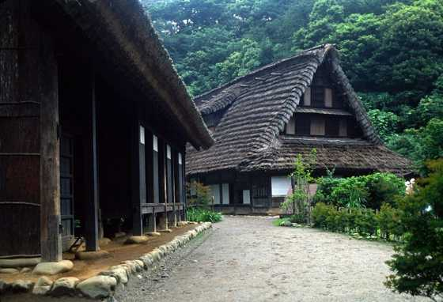
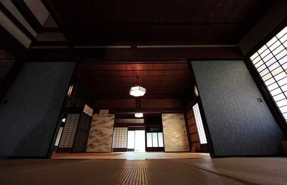
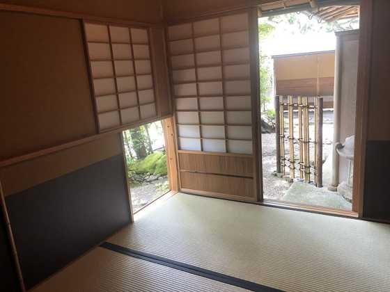
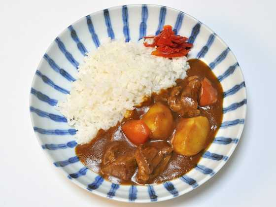
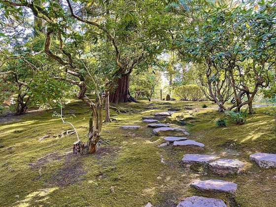
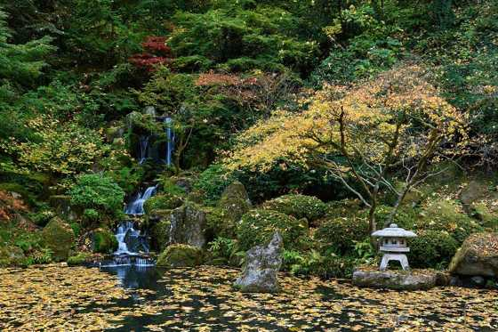
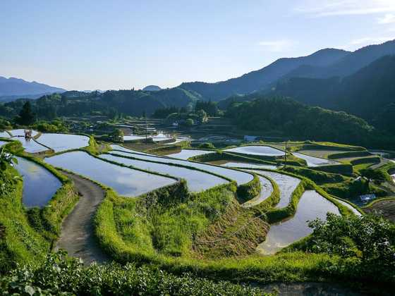

佐賀県多久市北多久町
木のぬくもりの家で、
ゆっくりカレーと紅茶を。
古い家の静かな時間のなかで、スリランカカレーとセイロンティー、コーヒーをいただく。そんな一席を思い描いた試作ページです。

「Kawasaki Nihon Minkaen-3」 Fg2 / パブリックドメイン(creativecommons.org)
お店について
古民家カフェ 胡蝶は、佐賀県多久市北多久町にある、木の温もりを感じる古民家のカフェです。Instagramでは、本格スリランカカレーとセイロンティー、スペシャルティコーヒーを提供していると紹介されています。
カレーはスリランカカレーと欧風カレーが案内されています。ご利用は予約制で、前日17時までにInstagramのDMまたは電話で予約とされています(Instagramプロフィールより)。
店名「胡蝶」の由来や店主の想いは確認できていないため、ここでは触れていません。このページの文章と写真は制作側のイメージで、お店の公式情報ではありません。

「Interior of a traditional Japanese house」 TANAKA Juuyoh(田中十洋) / CC BY 2.0(creativecommons.org)

「Nukata Center Japanese-style room」 Asturio Cantabrio / CC BY-SA 4.0(creativecommons.org)

「Shinsei-en Chashitsu Koma」 Miya / CC BY-SA 4.0(creativecommons.org)

「Moss Garden in Jishoji (Ginkakuji) Temple 1」 そらみみ / CC BY-SA 3.0(creativecommons.org)

「Sagano Bamboo forest in Arashiyama」 Naokijp / CC BY-SA 4.0(creativecommons.org)
メニュー
写真はイメージで、実際の料理・飲み物ではありません。詳しくはInstagramでご確認ください。

「Beef curry rice 003」 Ocdp / CC0(creativecommons.org)
「Deep-fried Tofu Japanese Curry Rice」 Andy Li / CC0(creativecommons.org)

「The cup of coffee on a wooden table」 Artem Beliaikin / CC BY 2.0(creativecommons.org)

「Enjoying a fresh cup of coffee alongside warm chocolate chip muffins」 Shixart1985 / CC BY 2.0(creativecommons.org)
口コミ
以下は制作側が作った「イメージ例」で、実在のお客様の声ではありません。
古い家の落ち着いた空間で、ゆっくりカレーをいただけました。香りに誘われて、ついおかわりしたくなります。
温かい紅茶を飲みながら、窓の外の景色をぼんやり眺める時間が心地よかったです。
予約制なので、ゆったりとした時間が流れていました。また季節を変えて訪れたいです。
アクセス
〒846-0002 佐賀県多久市北多久町大字小侍1325-1
電話: 準備中(ご予約はInstagramのDMから)
営業時間・定休日: 準備中
Instagram: @keiko_curry

「Portland Japanese Garden 008」 Vulturesong / CC0(creativecommons.org)

「Portland Japanese Garden October 2019 005」 King of Hearts / CC BY-SA 4.0(creativecommons.org)

「Rice terraces」 ASAKAWA KOHJI / CC0(creativecommons.org)